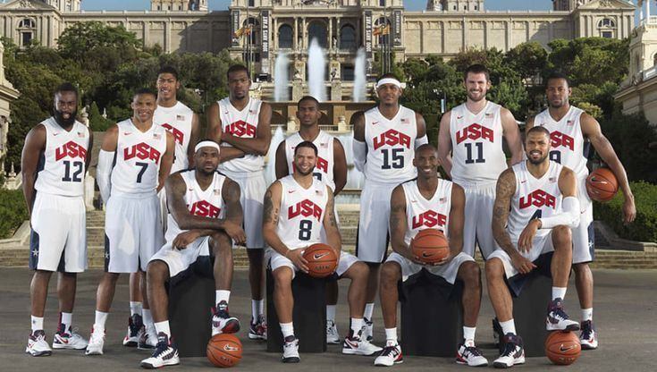
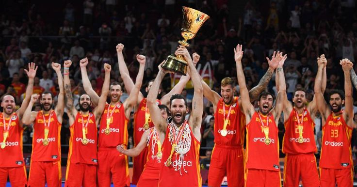

Historia del Básquetbol
El básquetbol fue inventado en 1891 por James Naismith en Estados Unidos. Es un deporte dinámico y estratégico jugado por dos equipos de cinco jugadores cada uno.
Reglas Básicas
- 5 jugadores por equipo
- Un partido se divide en cuatro cuartos de 10 o 12 minutos según la liga.
- El objetivo es anotar puntos encestando el balón en el aro del equipo contrario.
Selecciones Históricas

Estados Unidos - Referente global del deporte.

España - Una de las más consistentes del siglo XXI.
Mejores Jugadores de la Temporada
| Jugador | País | Tries |
|---|---|---|
| Beauden Barrett | Nueva Zelanda | 12 |
| Emiliano Boffelli | Argentina | 9 |
| Nauel Bares | Uruguay | 19 |
Tabla de Posiciones - Selecciones
| Posición | Selección | Partidos Jugados | Puntos |
|---|---|---|---|
| 1 | All Blacks | 5 | 23 |
| 2 | Sudáfrica | 5 | 20 |
| 3 | Argentina | 5 | 18 |